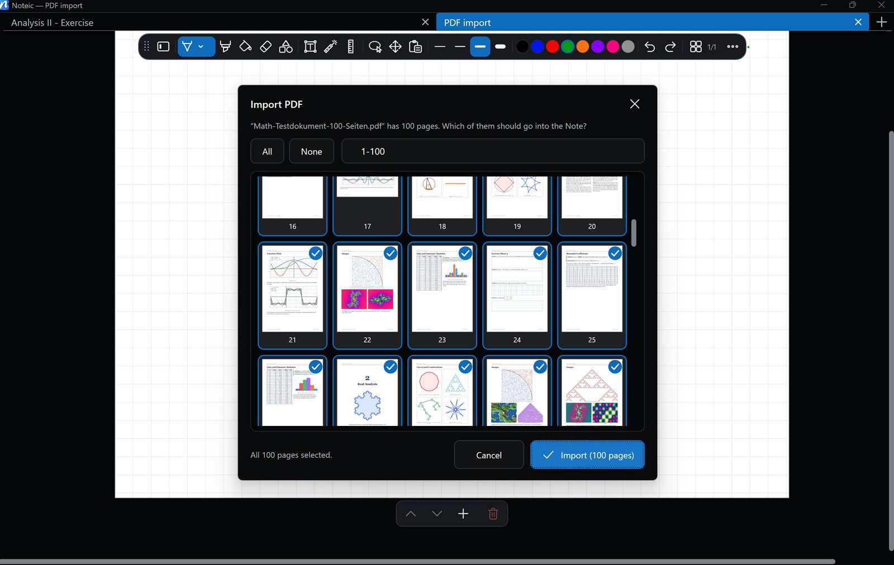

Bring lecture slides and worksheets into your notes, write right on them, copy and mark their text, and export the result as a PDF.

Import a PDF#
- Save your note first, because the PDF is stored inside the note.
- Open … › Import PDF and choose the file.
- Pick the pages: tap pages to select them, use All and None, or type a range like
1-3, 7, 10-12. All pages are selected at first. - Tap Import.
The pages are added after the current page, each in its own PDF size. If the note only has one empty page, that page is replaced. You can undo the import.
Bookmarks: if the PDF has bookmarks, the ones of the pages you import are added to the outline of your note. Open it with the page number in the toolbar or Ctrl+G, then Outline.
New note from a PDF: in the library, right-click or press and hold a Chapter and choose Import PDF…. Noteic creates a new note named after the PDF.
Write on PDF pages#
The PDF is the page background: every tool writes on top of it. Use Extend page borders to add room around a PDF page; the paper style you pick fills the new area. With Dark pages on, PDF pages stay as they are.
Select text#
Select the text of an imported PDF to copy, highlight or underline it. This came with Noteic 1.7.
- Press and hold Lasso selection in the toolbar and choose Select text.
- Drag over the text of a PDF page. Noteic selects word by word. To select one word, double-tap it.
- Drag the handles at the start and at the end to change the selection.
- Use the bar that appears at the selection:
| Copy | Puts the text on the clipboard. Ctrl+C does the same. |
|---|---|
| Highlight | Tap one of the five colors next to the highlighter icon. They are the first five colors of your highlighter. |
| Remove highlight | The eraser icon shows when the selected text is highlighted, and takes the highlight away. |
| Underline | Four styles: Underline, Double underline, Wavy underline and Dashed underline. The line gets the color of the field next to them, Underline color, and the width of your pen, between 0.3 and 0.8 mm. |
- Your own colors: press and hold one of the five highlight colors, or right-click it, to change it. Reset brings back the color of your highlighter. Tap Underline color to change the color of the underline. It starts with the color of your pen, and Pen color goes back to it.
- Everywhere else, Select text works like the lasso, so you can leave it on while you work with a PDF. To switch back, press and hold the button and choose Lasso or Rectangle.
- A hint: if the lasso or the rectangle selects nothing on a PDF page, Noteic shows “To copy PDF text, press and hold the lasso and choose Select text”, at most three times.
- Highlights and underlines are part of your page like anything you draw: undo them with Ctrl+Z, erase them or select them with the lasso.
- Find text: to look for a word in a PDF, press Ctrl+F. Search also finds PDF text, and it starts with the text you have selected. See Search your notes.
- One page at a time: a text selection stays on one PDF page.
- Pages without text: some PDF pages are only a picture, for example a scan, and have no text to select. Noteic says “No selectable text on this page”, and the tool works like the lasso there.
- Text that can't be copied: in some PDFs, Noteic can't read the characters behind the text. Copy is grayed out then; highlighting and underlining still work.
Select text is in page-based notes. On a whiteboard, the same menu has Insert space instead.
Export as PDF#
- Open … › Export as PDF.
- Pick the pages, or tap Only this page.
- Choose where to save. When it is done, Noteic offers to open the file.
The export is a vector PDF: sharp at any zoom. It contains your paper and patterns, imported PDF pages, images, ink, highlighter, fills, shapes, text, formulas and memo tape (covered).
Bookmarks: if your note has an outline, Noteic writes it into the PDF as bookmarks, for the pages you export.
On a whiteboard, you choose under Save as type instead: the visible area on A4 or A3, or the whole whiteboard in sheets. See Whiteboard › Export as PDF. Import PDF is only in page-based notes.
Images#
- … › Import image adds a PNG, JPG, GIF, BMP, TIFF or WebP file.
- Drag an image from File Explorer or from a website into your note.
- Paste an image from the clipboard with Ctrl+V.
Images are stored inside the note. This also works in a new note you have not saved yet; only a PDF needs a saved note. Move, scale and rotate images with the lasso; Crop image in the selection bar crops without losing the original.